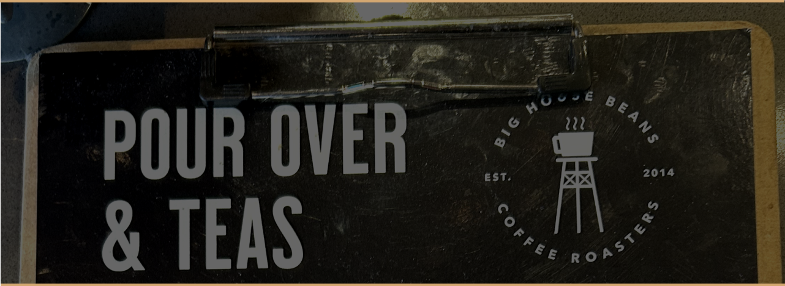
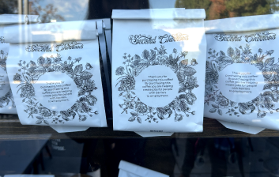
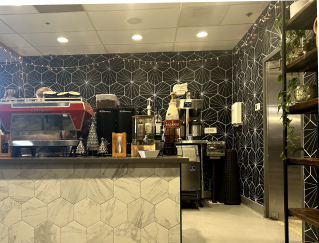
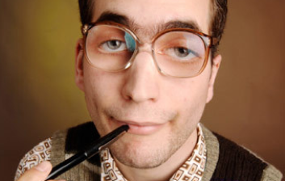

Coffee With Purpose
Big Bean House
EST. IN CALIFORNIA, USA

THIS IS OUR PURPOSE
At Big House Beans, we serve coffee with a purpose! Every batch is roasted to perfection, ensuring it tastes just as amazing as it smells. Along the way, we’re redefining the rules of specialty coffee an ever evolving industry where we are not afraid to challenge conventions. With our own unique stories and theories, each cup reflects our passion and commitment. As you enjoy your brew, discover the heart behind our mission
WE BELIEVE IN SECOND CHANCES.
Big House Beans Specialty Coffee Roasters crafts exceptional coffee while empowering hard-working individuals often overlooked. Through mentorship and skill-building, we create opportunities for those ready to shape their future.

Our Founder The inspiration behind our little operation here was our uncle, Sheldon P. McInerney. Uncle Sheldon was active in the scene for years before we got involved, and we can safely say without his pioneering efforts we never would have gotten this far.

We'll never forget Sheldon's favorite mantra (frequently repeated during family dinners, movies, and especially televised sporting events): "Sometimes I wonder if I was born in the wrong century". Rest assured, Uncle, we often wonder the same thing.
Uncle Sheldon has always been something of a renaissance man. The work he has done in this area is only one aspect of his tireless curiosity and zest for life. He ran cross country in high school, and almost lettered his sophomore year. A lifelong student, Sheldon changed majors a dozen times in college, with a lot of focus in higher mathematics and the physical sciences. He found his passion, however, in the cultural anthropology of fashion: his graduate thesis, "Fabric of Revolution: The Plaid Patterns of the Scottish Highlands" was nearly completed in 2002. Music has consumed much of his life since then, his ukelele covers of '80s synth pop songs (recorded in his bedroom) are available for free download on Soundcloud under the name "The Uncle Sheldon Solo Project".
We'll never forget Sheldon's favorite mantra (frequently repeated during family dinners, movies, and especially televised sporting events): "Sometimes I wonder if I was born in the wrong century". Rest assured, Uncle, we often wonder the same thing.
LeeAnn Krause, Co-FounderHaving overcome her own life challenges, LeeAnn deeply values second chances. While she’s a devoted coffee drinker, her true passion lies in loving and supporting people. A mother who enjoys baking, she also dedicates time to volunteering in her local community. Basically she just likes helping people.
John Krause, Co-FounderA former San Quentin inmate, John understands the challenges of rebuilding a life. After finding hope in a supportive community, he envisioned a business that empowers others facing similar struggles. His mission is to deliver exceptional coffee while creating opportunities for individuals and companies to partner in fostering positive change.
Big House Beans is more than coffee; it’s a second chance and a celebration of purpose. We recognize that every person is unique, just like every coffee we roast. By sourcing a wide variety of distinctive beans, we ensure each coffee shines in its own way, reflecting the same belief we hold for people. Everyone has potential, and through embracing diversity, we strive to nurture it.
Our mission goes beyond crafting exceptional coffee. At Big House Beans, we are dedicated to empowering individuals by providing unconditional love, support, and opportunities to grow. We aim to inspire, uplift, and create lasting change in the lives of those we serve. Every bag of coffee represents a commitment to caffeinating our community while embracing its rich diversity. With every sip, you’re joining a movement fueled by purpose and connection.